R^2는 rss만 보면 의미가 없다. 데이터 증가하면서 같이 증가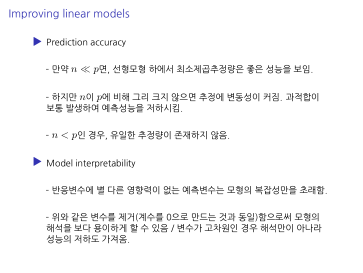
p가 너무 커지면 리니어 리그레이션이 적용이 어렵다? 변수가 너무 많으면 뭐가중요하고 중요하지 않은지 어려우니깐 잘 선택을 하자는 것 acc측면에서는 리니어 리그레이션보다 좋은게 많다 하지만 아직도 사용하는 이유은 해석이 쉽기 때문이다.
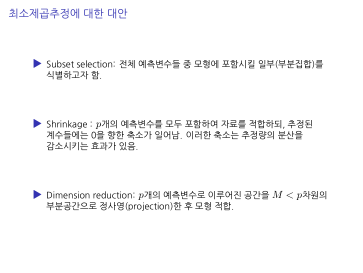
1)subset selection 필요없는거 날리자 2) shrinkage 변수가 하는 역할이 어떤건 중요하고 실제 추정량은 0이 안나온다. 변수가 1만개에서 중요한거는 2개가 있다고 하면 2개 빼고 나머지는 전부 작은 값으로 나타난다. 귀무가설 통과 못한다. 자잘한 값들을 어떻게 처리할 것이냐 첫번째는 값으 계속 줄여버리자라는 방법, 축소를 하는데 0은 못만드는 접근 두번째는 절대값 기준 이하는 모두 0으로 만드는 것이다 세번재 dimension reduction은 정보라는것은 상당한 중첩이 많은데 필요한정보가 잘못하면 날아갈 수도 있어서 정보를 줄이지말고 요약해서 보자는것이다
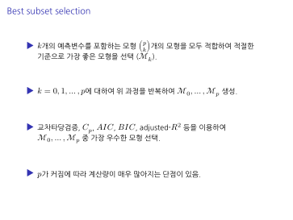
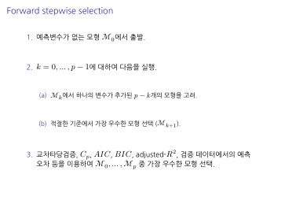
첫번째는 과제를 하면서 했다. cp를 계산해봤다. 모든변수의 경우의수로 그측도는 R^2는 아니다 R^2는 변수가 커지면 커지는 단점이 있어서 에시) 변수가 3개가 있다고 한다.
경우의 수가 많은데 점이 다 있어야한다?
단점이 많다. 데이트의 크가 클때
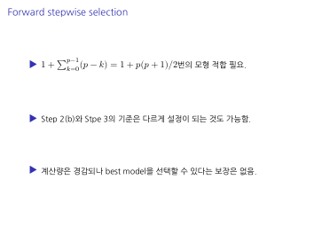
전진선택 사실 중간에 끝어버린다. 새로운걸 넣어보니깐 모형에 도움이 안되기때문에 전진할때는 R^2를 쓰면서 모형을 완성할 수 있다.근데 쓰지마라 전진을 다시켜놓고 평가를 다르게
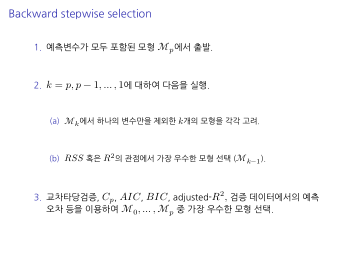
데이터가 작을때만 쓸 수있다. 교차검증오차가 작아지는게있는지 확인하는것이다. 계속 줄여도 도움이 안되면그만줄이는방식이다.
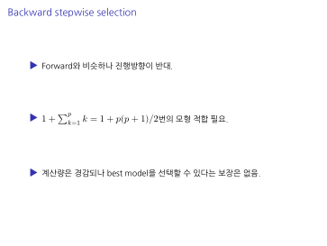
후진선택은 모든걸 피팅하고 선택하는것이다.
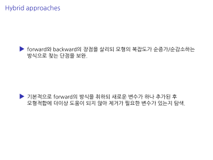
하이브리드
주로 포워드에서 변수를 넣다 뺏다 하는데
포워드 중간중간 하나라도 뺄게 있는지 백워드를 한번만한다.
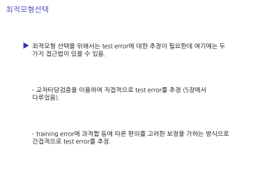
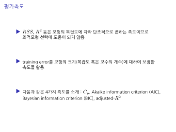
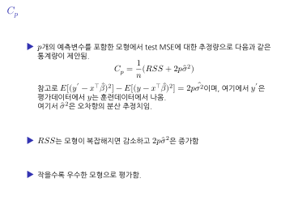
test set이 필요없는 측도
training error를 줄이는데 민감한데 R^2는 절대 쓰지마라 loss는 예측오차 학습 loss < 평가 loss 인데 평가loss-평가loss를 구할수 있나.
훈련데이터에서는 독립일때 0으로 떨어진다. 평가데이터에서보다 예측오차가 작게나오는데 즉 평가의 예측오차와 훈련예측오차의 차이를 최적화하는것이다.
문제가 있다. 시그마는 이론적으로 정확한 값을 넣어야한다. 근데 정확한 값을 못구함
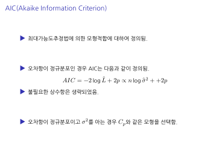
60~70년대에 구한 계산법 시그마 스퀘어(분산)를 알면 cp와 동일한데 모르니깐 위 식처럼 해야한다. 참고로 여기서 분산햇하고 위에서의 시구마
aic는 현재모형에서 추정된 시그마를 사용해야한다.
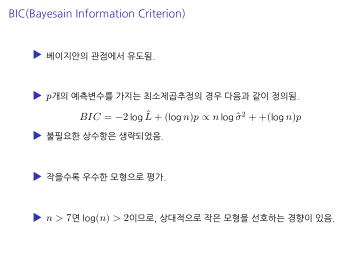
2가 logn으로 바뀐건 n이 보통은 작지는 않다. 어느모형이 잘맞나를 선택하는 것이 시그마를 수정된 강의노트는 모른 상태에서 계산한 것이다.
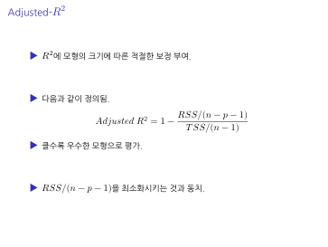
R^2에 아쉬움을 가지고 개발한 p가 커지면 분자가 작아져서 rss가 상대적으로 커진다. mse를 줄이는 관점에서 살펑ㅇㅇㅇㅇㅇㅇㅇㅇㅇㅇㅇㅇㅇㅇㅇㅇㅇㅇㅇㅇㅇㅇㅇㅇㅇㅇㅇㅇㅇㅇㅇㅇㅇㅇㅇㅇㅇㅇㅇㅇㅇㅇㅇㅇㅇㅇㅇㅇㅇ
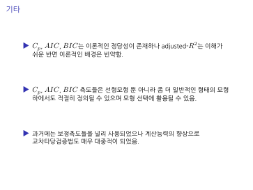
cp는 뭐가문제다? 모든곳에 똑같이 적용해야하는 시그마 스퀘어가 문제이다. 교차타당점증을을 하던지 validationset을 하나 만들어서 하던지 해야한다.
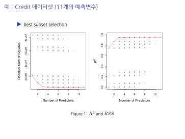
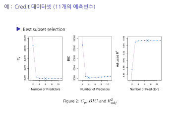
- validation본것 3 crossvalidaion을 해본것
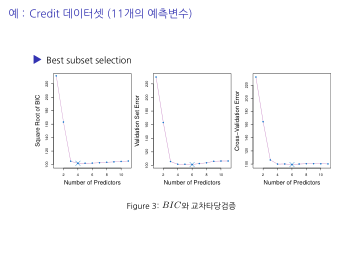
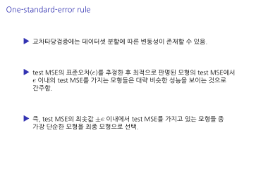
원스탠다드에러 민?
——————————-시험범위
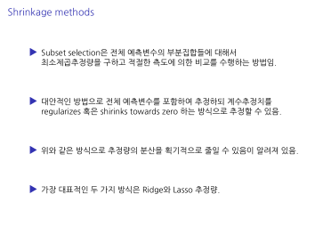
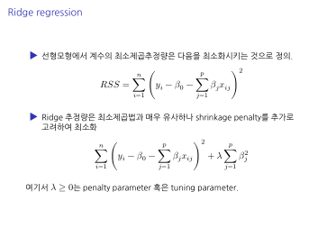
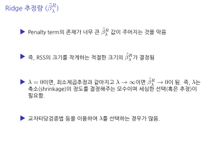
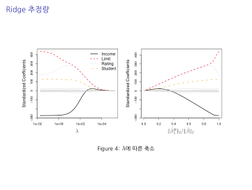
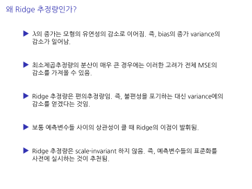
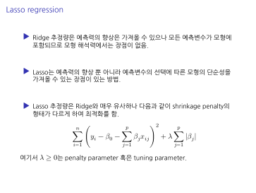
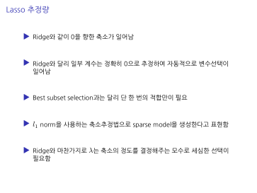
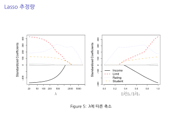
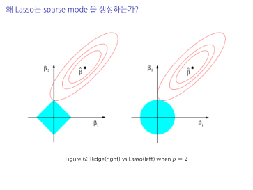
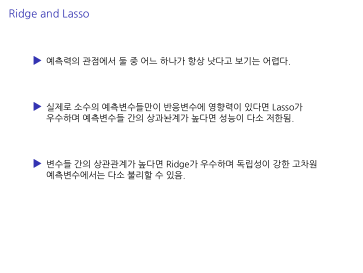
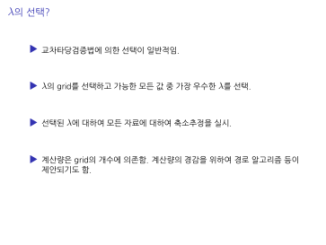
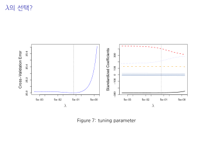
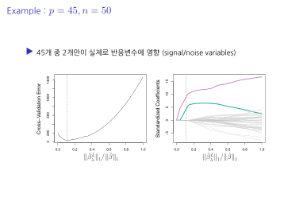
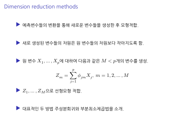
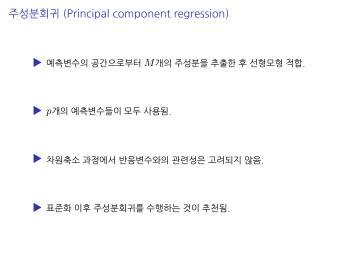
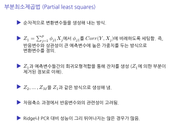